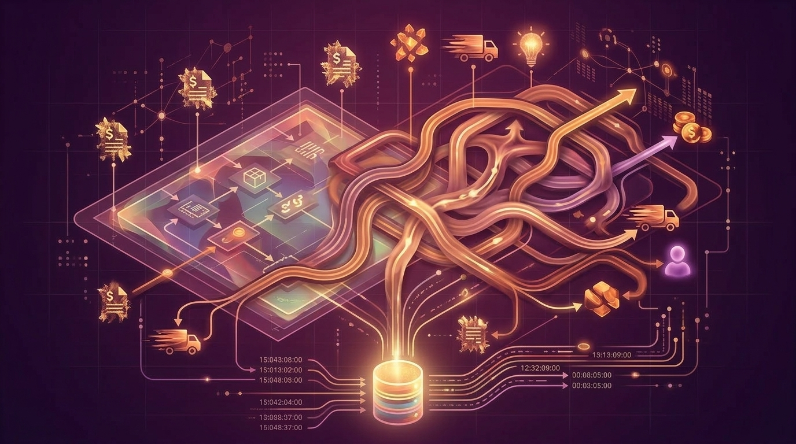

ArchiMate 4 and the Cartography of Complexity
How ArchiMate 4 simplifies enterprise modeling while enterprise systems grow more complex, shifting the real challenge from notation to semantic governance and operational evidence
A reflection on the Celonis Academy course Process Mining: From Theory to Execution, completed in 2022, and on why process mining is becoming a strategic capability for enterprises that need to understand, measure, compare, predict, and improve their real operational behavior.
In 2022 I completed the Celonis Academy course Process Mining: From Theory to Execution, developed around the work of Prof. Wil van der Aalst and the practical execution environment provided by Celonis.1
The course is relevant not only as a technical introduction to process mining, but as a signal of a broader change in enterprise management: organizations can no longer rely only on interviews, workshops, BPMN diagrams, target operating models, and ERP configuration documents to understand how they work.
Those instruments describe how processes are supposed to run. Process mining starts from a different premise: the real process is reconstructed from the event data generated by operational systems. Every ERP transaction, workflow status change, order update, invoice posting, goods movement, approval, payment, case transition, or service-ticket action may leave a digital trace. If those traces contain at least a case or object reference, an activity, and a timestamp, they can be transformed into process evidence.
That is the essential shift:
%%{init: {"theme": "neo", "look": "handDrawn", "layout": "elk"}}%%
flowchart TD
A["Procedures, workshops, BPMN, ERP configuration"] --> B["Intended process"]
C["Events, timestamps, cases, objects, resources"] --> D["Observed process"]
D --> E["Process mining"]
E --> F["Discovery, conformance, performance, prediction, action"]
For enterprise architecture and digital transformation, this is not a minor analytical improvement. It changes the epistemology of process work. The enterprise is no longer understood only through designed representations. It becomes measurable through its own execution data.
The future enterprise will not be governed only through static architecture diagrams, periodic reports, and managerial escalation. It will require quantitative models of how work actually flows across systems, organizations, data objects, resources, and external partners.
This is particularly important because modern enterprises are no longer simple hierarchical organizations with neatly bounded processes. They are distributed operating systems. Their execution spans ERP, CRM, MES, WMS, PLM, ticketing platforms, workflow engines, supplier portals, customer portals, integration middleware, data platforms, and, increasingly, AI agents and automation layers.
In that environment, a traditional process map is insufficient. It may describe the intended sequence, but it usually cannot answer questions such as:
Process mining addresses this gap by connecting process science, data science, operations research, business process management, and information systems. It is not merely a visualization technique. It is a quantitative discipline for reconstructing, measuring, comparing, and improving enterprise behavior.
This is why it is becoming central to enterprise architecture. Enterprise architecture defines the intended enterprise: capabilities, processes, applications, data, integrations, organization, and governance. Process mining reconstructs the observed enterprise: what actually happened, in what order, through which systems, under which conditions, and with which performance consequences.
The strategic question becomes:
%%{init: {"theme": "neo", "look": "handDrawn", "layout": "elk"}}%%
flowchart TD
EA["Intentional enterprise architecture<br/>capabilities, processes, applications, data, governance"]
EV["Event evidence<br/>ERP, CRM, MES, WMS, workflows, logs"]
PM["Process mining"]
OBS["Observed behavioral architecture"]
GAP["Transformation gap"]
ACT["Governed intervention"]
EV --> PM --> OBS
EA --> GAP
OBS --> GAP
GAP --> ACT
In other words, process mining gives enterprise architecture an empirical feedback loop.
The Celonis Academy course should not be understood as a narrow product tutorial. Its value is that it connects theory and execution: the academic foundations of process mining, the data structures needed to make it work, and the practical use of a platform to analyze real operational behavior.
At a conceptual level, the course covers the major families of process-mining work:
It introduces the basic event-log perspective. A process is reconstructed from events. Events are not generic records. They must be interpreted as activity occurrences connected to cases or business objects, with timestamps, resources, and contextual attributes. This immediately shows why process mining is also a data-engineering discipline: if the event abstraction is wrong, the discovered process will be misleading.
Second, it introduces process discovery. The simplest representations, such as directly-follows graphs, are easy to understand and useful for exploration, but they have limits. They can show paths, frequencies, and time, yet they may fail to represent concurrency or may generate unreadable “spaghetti” diagrams when the process has many variants. More advanced discovery approaches are needed to infer richer process structures.
Third, it introduces conformance checking and performance analysis. Discovery asks what happened. Conformance checking asks whether what happened is compatible with the expected model. Performance analysis asks where time, delay, backlog, rework, and bottlenecks accumulate. These are not only analytical questions; they are governance questions, because every deviation and every bottleneck ultimately needs an owner.
Fourth, it introduces comparative and predictive process mining. Once process behavior is reconstructed, it can be compared across periods, locations, plants, legal entities, customer groups, product families, resources, or organizational units. It can also support prediction: whether a case will be delayed, whether it will deviate, what the next activity may be, whether capacity should be reallocated, or whether a process instance is at risk.
Fifth, it connects process mining to action. Process mining is valuable only if evidence changes decisions. This is the critical movement from diagnostic analytics to operational intervention: trigger workflows, support automation, prioritize cases, redesign processes, modify system configuration, correct master data, or adjust governance rules.
The course therefore follows a progression that is highly relevant for digital transformation:
%%{init: {"theme": "neo", "look": "handDrawn", "layout": "elk"}}%%
flowchart LR
E["Event data"] --> D["Data preparation"]
D --> P["Process discovery"]
P --> C["Conformance and performance"]
C --> X["Comparative and predictive mining"]
X --> A["Action-oriented improvement"]
Prof. Wil van der Aalst is one of the central figures in the development of process mining. His work connected event logs, process models, Petri nets, conformance checking, performance analysis, prediction, and process improvement into a coherent scientific discipline.
The importance of his contribution is that process mining is not just a dashboarding idea. It is grounded in formal methods, workflow management, concurrency theory, data science, and operations research. That makes it especially relevant for enterprise transformation, where superficial visual analytics are not enough.
A company does not need more process pictures. It needs models that can be tested against execution evidence. That is the difference between a descriptive diagram and a computational process model. A diagram says what should happen. A process-mining model can show what did happen, how often, in which variants, with which deviations, and with what impact on performance.
In this sense, Wil van der Aalst’s work is important because it gives process analysis a scientific foundation. It transforms process management from a narrative discipline into an evidence-based discipline.
Celonis is one of the companies that industrialized process mining for enterprise use. Founded in Munich in 2011, Celonis describes its origin as bringing process mining from academia into the boardroom.2 Over time, its positioning has evolved from process mining toward broader Process Intelligence, including object-centric models, process context, automation, and AI-oriented execution support.
The significance of Celonis is not merely that it offers process-mining software. The strategic significance is that it helped make process mining operational at enterprise scale.
This matters because enterprise process intelligence requires more than algorithms. It requires connectors, scalable data ingestion, event-model management, business-facing views, process applications, conformance diagnostics, performance analytics, automation hooks, and governance mechanisms. The conceptual architecture is the following:
%%{init: {"theme": "neo", "look": "handDrawn", "layout": "elk"}}%%
flowchart TD
S["Enterprise systems<br/>ERP, CRM, MES, WMS, workflows"]
D["Event and object data"]
M["Process intelligence model"]
A["Analytics<br/>discovery, conformance, performance"]
P["Prediction and simulation"]
G["Governed action"]
S --> D --> M
M --> A
M --> P
A --> G
P --> G
This is why tools such as Celonis are relevant to enterprise architecture. They are not just analytical front ends. Properly governed, they can become an operational layer that compares enterprise intent with enterprise execution.
Enterprise architecture has traditionally been strong in representation: capability maps, process maps, application landscapes, data models, integration views, organizational models, and technology standards.
Its weakness is often measurement. An architecture repository may show that an organization has a procure-to-pay process, a sales-order process, a production-order process, or a customer-service process. It may also show which applications support those processes. But it usually cannot prove whether the process is executed as designed, whether the ERP template is followed, whether local entities have diverged, whether master-data defects create rework, or whether the intended control model is effective.
Process mining fills this measurement gap. It allows the architect to ask:
This is the direction enterprise architecture must take: from static representation to empirical architecture.
%%{init: {"theme": "neo", "look": "handDrawn", "layout": "elk"}}%%
flowchart TD
A["Static enterprise architecture"] --> B["Intentional model"]
C["Process mining"] --> D["Observed behavior"]
B --> E["Gap analysis"]
D --> E
E --> F["Transformation backlog"]
F --> G["Process, system, data, governance changes"]
For digital transformation, this is critical. A transformation program should not be judged only by whether a system goes live. It should be judged by whether the operating model actually changes. Process mining supplies the empirical evidence for that judgment.
Many transformation programs are still managed qualitatively. Steering committees discuss milestones, deliverables, risks, user adoption, and business readiness. These are necessary, but they are not sufficient.
The future of transformation management is quantitative.
A digital transformation should be able to measure:
This requires methods and tools that connect data, process, architecture, and decision-making.
Process mining is one of those methods. It does not replace managerial judgment. It disciplines it. It forces the organization to distinguish between opinion and evidence, between intended process and observed process, between local anecdote and population-level behavior.
The importance of process mining is increasing because enterprises are entering a new phase of automation and AI adoption. AI systems need context. Automation systems need triggers. Digital twins need state. Enterprise architects need evidence. Operations managers need causal diagnostics. CIOs and transformation leaders need proof that systems and processes are actually improving the business.
Process mining can supply part of that missing context. It can show the difference between a process that is merely digitized and a process that is actually controlled. It can identify where automation should be applied and where automation would be premature. It can provide the observed process structure needed for prediction, simulation, and optimization. It can reveal whether AI recommendations are acting on a correct understanding of enterprise execution.
In this sense, process mining is not a legacy topic from business process management. It is a foundation for the next enterprise architecture stack. The future stack will not be only:
%%{init: {"theme": "neo", "look": "handDrawn", "layout": "elk"}}%%
flowchart TD
S["Systems"] --> D["Data warehouse"]
D --> R["Reports"]
R --> M["Management decisions"]
It will increasingly become:
%%{init: {"theme": "neo", "look": "handDrawn", "layout": "elk"}}%%
flowchart TD
S["Systems"] --> E["Event and object data"]
E --> PI["Process intelligence"]
PI --> AI["AI, prediction, simulation"]
PI --> AU["Automation and workflows"]
AI --> G["Governed decision-making"]
AU --> G
G --> X["Controlled execution"]
X -. feedback .-> E
That is why process mining belongs in the toolkit of enterprise architects, CIOs, transformation leaders, process owners, data leaders, and operational excellence teams.
The most important takeaway from Process Mining: From Theory to Execution is that process mining is not a tool category. It is a way of making enterprise execution observable.
The course connects the foundational questions:
These questions are not academic in the narrow sense. They are the questions that every serious digital transformation must answer.
An enterprise that cannot observe how it really works cannot govern transformation rigorously. It can only manage programs, deploy systems, and hope that the operating model improves.
Process mining changes that. It turns operational traces into evidence.
The direction is clear. Process mining is moving from occasional analysis to continuous process intelligence. It is moving from case-centric logs to object-centric process models. It is moving from discovery to conformance, from conformance to prediction, from prediction to simulation, and from simulation to governed action.
This is the reason I consider process mining relevant far beyond the Celonis platform itself.
The deeper point is architectural: enterprises need a quantitative layer that connects operational reality with decision science.
That layer must be able to:
This is not only process improvement. It is the foundation of an empirical operating model.
This article is a short reflection on the course and on why process mining matters for the future of enterprise architecture and digital transformation.
For a deeper technical treatment, I wrote a full article on process mining as computational process intelligence, covering event-log construction, trace semantics, directly-follows graphs, Petri nets, variants, behavioral entropy, conformance checking, performance mining, object-centric process mining, data architecture, enterprise applications, Celonis, and the role of process mining in enterprise architecture.
Read the full article here: Process Mining as Computational Process Intelligence




Celonis Academy, Process Mining: From Theory to Execution. The course is an on-demand learning path connecting academic theory from Prof. Wil van der Aalst with practical use cases and platform exercises.↩︎
Celonis, About Us — Our history. Celonis describes its 2011 foundation as bringing Process Mining from academia into the boardroom, and later positions its evolution around Process Intelligence and the Process Intelligence Platform.↩︎